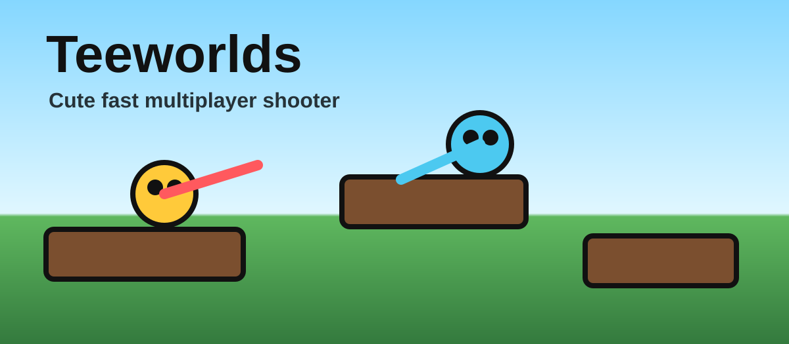

Hook often
The hook is the secret to speed and escapes.
Teeworlds
Teeworlds is a free open-source online 2D multiplayer shooter for major operating systems.
Download Teeworlds
Basics
Shooter
The hook is the secret to speed and escapes.
Health, armor, and weapons decide fights.
A still tee is an easy target.